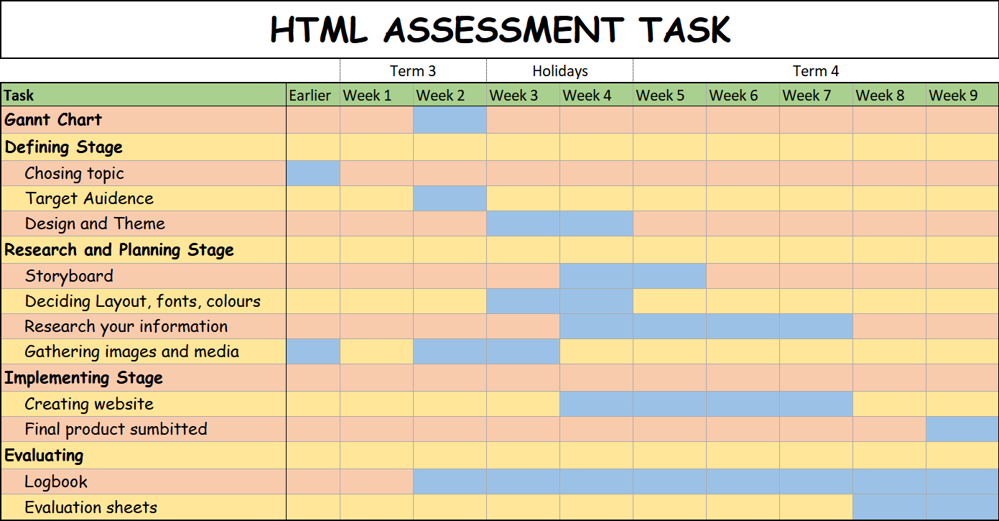

Design Process
I created separate CSS files for each webpage so that I don't have conflicting code, and it also makes it neater and easier to read. I also have separate CSS files for the navigation bar, and one for the header and footer, again to make it easier to read and understand.
Target Audience
The target audience is people interested in the Cube and looking for information about it.
Storyboard
The target audience is people interested in the Cube and looking for information about it.
Design Choices
Original I wanted to make the whole webpage use dark colours, but I reluctantly added colour after I got some requests from friends and teachers to add it. I made the text boxes in the "chat forum" different colours to signify what they were, the post is red, the comments are green, and the replys to comments are yellow-green.
Gantt Chart
